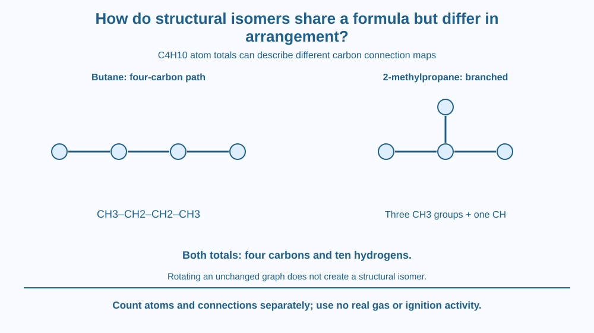

Distinguish molecular formula from atom connectivity using C4H10. Compare butane and 2-methylpropane as structural isomers. Recognise why rotating or bending a drawing does not create a new connectivity pattern and why the same formula does not guarantee identical properties.
Two structural drawings each contain four carbons and ten hydrogens, yet their carbon connections differ. One has a chain of four carbons; the other has a central carbon connected to three other carbons.
The atom totals match, but the connection map does not. A molecular formula compresses some information and leaves other information out.
The useful question is not whether the drawings look different on the page. It is whether the same atoms are connected in the same pattern after harmless changes of drawing orientation are allowed.
A molecular formula states the number of each kind of atom in a molecule. Structural isomers share a molecular formula but differ in connectivity. This is a more specific relationship than merely being members of the same homologous family.
For butane, a condensed structure is CH3–CH2–CH2–CH3. The four-carbon chain contains two terminal CH3 groups and two internal CH2 groups, giving ten hydrogens in total.
For 2-methylpropane, a central CH group connects to three CH3 groups. The nine hydrogens on the methyl groups plus the central hydrogen again give C4H10. The carbon network is branched rather than one four-carbon path.
The central carbon's number of carbon neighbours differs from any carbon in the unbranched chain. This graph-like feature cannot be changed merely by turning the page. It demonstrates a genuine connectivity difference.
A bent drawing of butane remains butane if its connections are unchanged. Molecules also have three-dimensional shapes and can change conformation, but not every shape or orientation difference is structural isomerism. The lesson focuses on the connection map.
Different connectivity can influence physical properties because molecular shape affects interactions and packing. The isomers need not have identical boiling behaviour. We give no real fuel-performance or handling claim from the formula comparison alone.
The same atom total also does not automatically identify a functional group in more complicated cases. A structural formula preserves connections that a molecular formula leaves unspecified. This connects to the earlier ester lesson without repeating its naming mechanism.
Both example substances require appropriate chemical handling in real settings. Students do not need gas samples, lighters or odour tests. Paper structures provide the complete learning goal safely.
Use four carbon nodes and connecting lines. First make one path of four nodes. Then make a three-branch pattern around a central node. Add hydrogen counts according to the intended simple valence model.
Try rotating the first graph on paper. Its node-neighbour pattern does not become the branched graph. The difference is structural rather than artistic.
Next redraw the chain as a zigzag. The picture changes, but the connectivity does not. Comparing which nodes connect, rather than matching silhouettes, prevents overcounting ordinary redrawings as new isomers. This is a useful bridge between chemical notation and simple network reasoning.
The SVG shows the four-carbon chain and the branched carbon network side by side. Hydrogen counts complete both to C4H10. A central-node marker highlights the three carbon neighbours in 2-methylpropane.
A lower strip rotates or bends the chain representation while preserving connections. Its caption says same structure, different drawing. No three-dimensional model is claimed to be exact.
The illustration contains no real gas container or preparation steps. Its purpose is atom counting and connectivity comparison, keeping this lesson distinct from the earlier carbon-bond diversity explanation and the homologous CH2 increment pattern.

Chemical labels need sufficient identity because one formula can correspond to more than one substance. A safe and useful material description cannot always stop at the atom totals.
In an Indian chemistry classroom, paper node models can reveal isomerism without any laboratory handling. The method is especially useful for checking whether two seemingly different drawings actually preserve the same graph.
Real product behaviour also depends on mixture composition and conditions. A C4H10 example should not be turned into a recommendation about a household fuel or an experiment involving ignition.
Use paper and a pencil, or four safe large paper circles as carbon tokens.
Do not use toothpicks or sharp construction tools. Label the structures and formula separately. Ask a partner whether a rotated chain creates a new isomer and require an answer based on connections rather than appearance.
Why can a molecular formula fail to identify one unique substance? State the connection information it omits.
Now imagine two drawings with all the same connected neighbours but different positions on the page. What evidence would justify treating them as different structural isomers? The answer should show that visual difference alone is insufficient.
What do structural isomers share?
Answer: C — They share atom totals while differing in connectivity.
Why is 2-methylpropane not merely a bent drawing of butane?
Answer: B — A central carbon connected to three carbon neighbours differs from the unbranched path.
A butane diagram is rotated with all bonds preserved. What results?
Answer: A — Rotation changes presentation rather than the atom connection graph.
Create a comparison card for the two C4H10 structures, including carbon connections, hydrogen count and name. Add a false-isomer example made by rotating or bending the chain drawing.
Explain why one pair differs in connectivity while the other does not. Keep all work on paper and avoid boiling-point numbers or practical fuel claims that were not measured in the activity.
The same collection of atoms can make different substances because a formula is not a full connection map. Chemistry therefore needs several levels of description. Atom counts answer what is present, while structure answers how it is connected; neither level should be mistaken for all the information in the other.
Structural isomers share atom totals but differ in connectivity; butane and 2-methylpropane both have C4H10, while rotating one unchanged graph creates no new isomer.